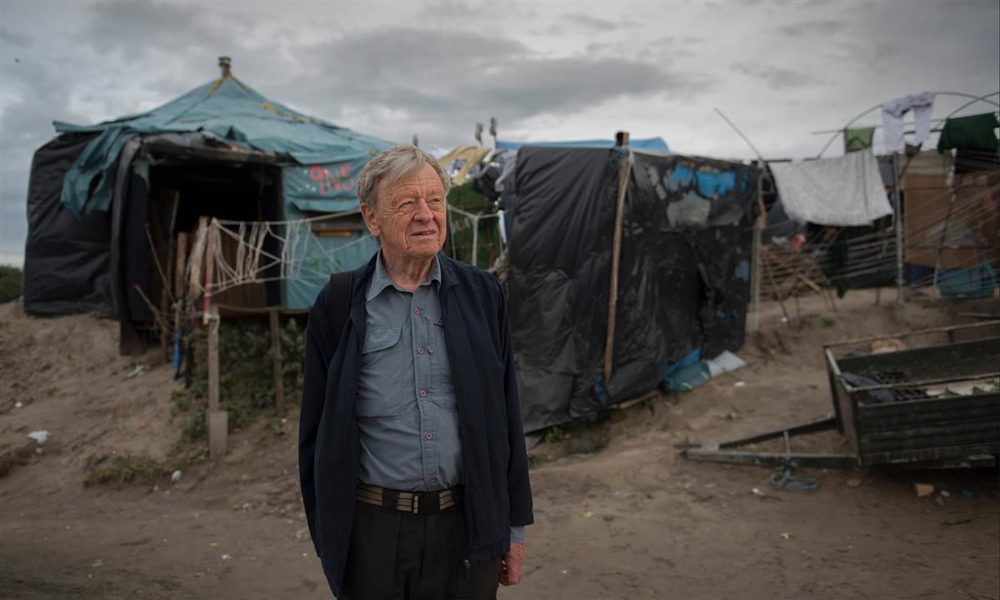

‘Boris Johnson’s withdrawal bill leaves the children whose rights have been removed with no means of finding their family in the UK.’ A child in the Moria refugee camp on Lesbos, Greece. Photograph: Orestis Panagiotou/EPA
We simply can’t turn our backs on vulnerable refugee children
The government has dropped my amendment protecting children’s rights, but I’m not giving up
Fri 10 Jan 2020 15.34 GMT Last modified on Fri 10 Jan 2020 17.45 GMT
The way we treat the most vulnerable people is a test of who we are, what kind of country we hope to live in and what humanity we have. The most vulnerable people imaginable are lone refugee children.
I’ve visited the camps in Greece and Calais, where I have met many children without families. Some are in refugee camps, but others live rough, in woods, on the streets or even on rubbish tips, with some support from NGOs. I can think of little more frightening than to be a child in a foreign country with no family, unable to speak the language, sleeping rough.
We know that thousands of these children have simply disappeared. Others are threatened and abused, or worse. They are often fleeing war, and may have witnessed horrors, torture and the destruction of their communities. If they are not traumatised when they leave their homes, then they certainly are in the aftermath. When I have met them in the camps or in the streets, I have seen that for these children, trauma is almost a universal experience.
A small proportion of these refugee children hope to come to the UK because this is the only safe country where they have family. They have a connection here – perhaps the only relations they have.
As members of the EU, we are part of the Dublin regulation, which allows lone children within the EU to apply for legal family reunion with relatives elsewhere within the EU. So, for example, a Syrian orphan who arrives in Greece hoping to find an uncle in Birmingham has the right to apply to be reunited with him. But when we leave the EU, we will no longer be covered by the Dublin regulation.

‘I have seen that for these children, trauma is almost a universal experience.’ Lord Dubs visiting a refugee camp in Calais in 2016. Photograph: Alecsandra Raluca Drăgoi/The Guardian
When Theresa May’s withdrawal bill was going through parliament, I brought an amendment in the Lords that received cross-party support in both houses. This obliged the government to negotiate that the terms of the Dublin regulation would continue after we left the EU. So when the latest withdrawal bill was published just before Christmas, it was a shock to see that the rights of refugee children to be reunited with their families here had been removed. There had been no mention of this in the Conservative manifesto.
Boris Johnson’s withdrawal bill, which passed the Commons unamended on Thursday, leaves the children whose rights have been removed with no means of finding their family in the UK – other than using illegal traffickers or other dangerous routes.
The Lords will be debating the withdrawal bill in the coming week and a half, and I will be bringing an amendment to return the original rights to some of the world’s most vulnerable children. Among my Conservative colleagues, I sense there is sympathy for the view that there is no moral justification for preventing family reunion. It seems the government is concerned that my amendment may pass the Lords.
If this happens, then the bill will return to the Commons. Public support will be crucial if the Commons is to support the Lords amendment. Filling the mailbags and inboxes of MPs and peers will certainly help, but it’s a really urgent matter because the prime minister has set such a tight timetable.
When I arrived in Britain as an unaccompanied refugee child fleeing the Nazis, I never thought I would end up in the Lords. But this country not only allowed me a life and gave me sanctuary, it also gave me opportunity. I certainly never imagined that 81 years later, in the same country that gave homes to 10,000 lone refugee children like me, I’d be fighting for just a few hundred to be allowed to find their families here.
- Alf Dubs is a Labour peer and former MP
- Comments on this piece are premoderated to ensure discussion remains on topics raised by the writer. Please be aware there may be a short delay in comments appearing on the site.
SOURCE: THE GUARDIAN
Keir Starmer and Lord Dubs urge Tory MPs to rebel over child refugees